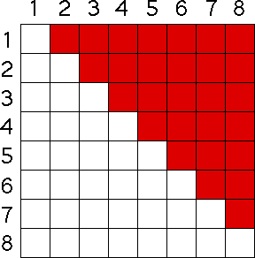

| By now the pattern should be clear: the number of competitive pairs is |
| 7 + 6 + 5 + 4 + 3 + 2 + 1 = 28 |
|  |
| In general, for a population of N animals, the number of competitive pairs is |
| 1 + 2 + ... + (N-1), |
| and this sum is known to
equal |
| Pn+1 = (1 + B - D)⋅Pn - C⋅(Pn - 1)⋅Pn/2. |
Return to the Logistic Map.